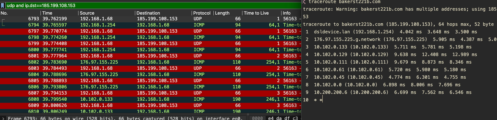
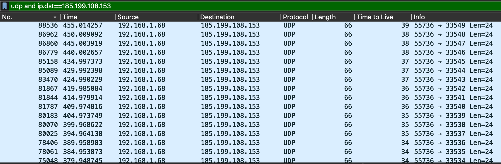
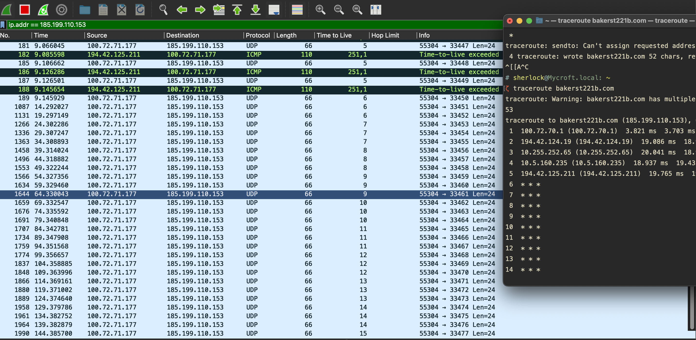
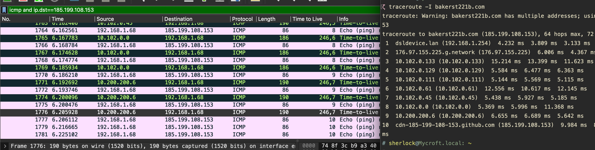
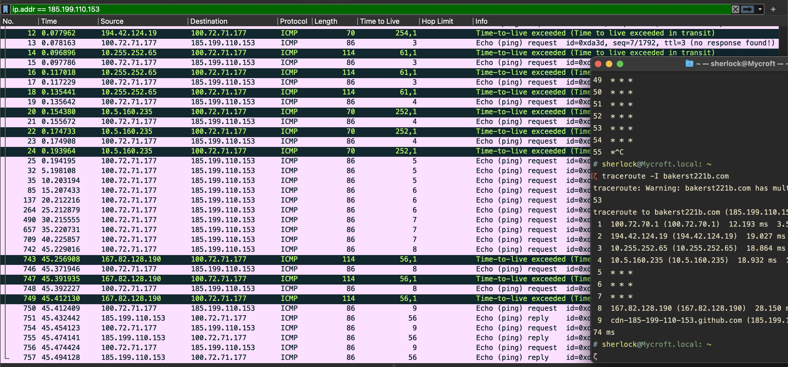
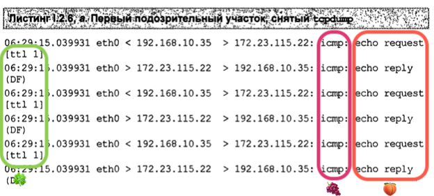
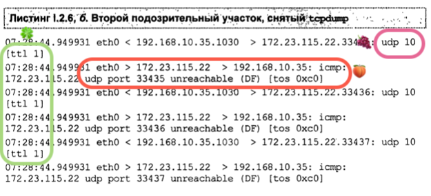
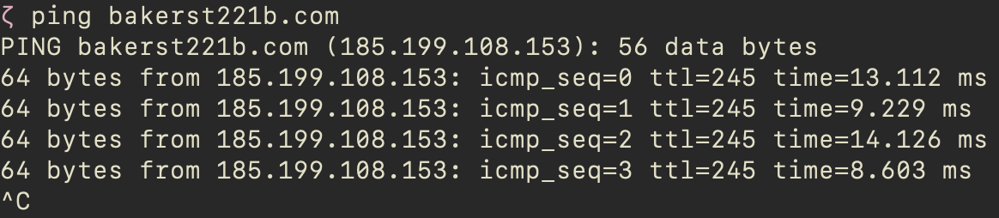

traceroute, tracert
On Windows, it’s tracert (due to some legacy max-name-size limitations). On Linux and macOS - traceroute. Windows uses ICMP protocol by default, while macOS and Linux - UDP. You can, however, make tracerout on UNIX operate over ICMP by specifying -I switch.
🧪 There is an extraordinary thing that I have noticed. I was trying to capture the traceroute and tracert traffic to show the screenshots.
I launched traceroute on macOS, and I got a bizarre response: 64 lines of 3 wildcards that could indicate a firewall blocking ICMP/UDP requests. I googled and googled and decided to check the Windows tracert on a VM on the same machine. And strangely, I got a normal response. That led me to believe that the macOS traceroute is buggy since the machine is the same and all traffic is routed through the same nodes.
Another idea was that my firewall on macOS was blocking it, but the firewall was on, and how come the traffic on Windows was not? Isn’t the macOS firewall supposed to block all the machine traffic? After some quick Internet searches, the VPN might be the reason. I turned it off, and the utility started doing what it was destined to.
So, there was a VPN on, on a macOS host. It’s supposed to work for ALL the traffic coming from the machine. VM sits atop. Why isn’t its traffic going through the VPN?
⛔️ Windows 11, Parallels on M1 macOS - doesn’t work, same issue,
* * *for every host. ✍🏻 I turned on the VPN (for macOS, it needed to be off, for Windows - on 🤯)
⛔️ VM, tracert seems to be doing one hop. ✍🏻 With shared network. Changes to bridged WiFi, and now the tracert starts as usual, although there are these
* * *again. I turned the firewall on macOS and Windows - nothing. I tried turning the VPN on and off - nothing. Which one is the default?
⛔️ Wireshark would not run on an ARM macOS Parallels Windows 11. ✍🏻 I don’t have a link to the source, but I tried installing a 32-bit version, and it worked.\
Let’s compare the two systems and find something to help identify the OS based on the default behaviour.
Below you can see three screenshots of traceroute utility at work. For each TTL value/network node (starting from 1), macOS sends three consecutive requests. For each UDP request with a given TTL sent, an ICMP reply is received when the node is not filtered. It starts with TTL=1, sends three UDP requests regardless of whether there is a reply, and then increments the TTL value by one.

If the node is not filtered, you’d observe something like this in the above screenshot:
- TTL=X, UDP request
- ICMP reply
- TTL=X, UDP request
- ICMP reply
- TTL=X, UDP request
- ICMP reply
- TTL=X+1, UDP request
- ICMP reply
- TTL=X+1, UDP request
- ICMP reply
- TTL=X+1, UDP request
- ICMP reply
- … (you get the idea)
What happens when the node is not responding to these UDP probes? UDP is sent, just like in the screenshot above, but there is no ICMP reply. See the below picture. Again, three UDP requests with the same TTL, then it’s incremented.

To make things a little clearer, I’ve captured the traffic along with the terminal window to show the filtered nodes’ responses both in Wireshark and in traceroute output.

Note the asterisks *; these indicate some filtering that rejects UDP probes. Note that there is a correlation between the number of asterisks, the number of UDP requests in Wireshark and the absence of ICMP replies. Whenever some filtering is in place, OS tries three times and then gives up hope of getting an answer and moves on to the next node by incrementing the TTL. Note that the last number in the Terminal is 14, whereas the previous TTL is 15 (only one request yet). The asterisks are added only when the traceroute sends another request.
Now, let’s see what happens when we use ICMP instead. Pretty much the same, except that the protocols are different. For this to work, you will need to add a -I switch.


Windows tracert:

UNIX traceroute:

ping
I have run ping bakerst221b.com on my Mac and looked at the traffic and the command output. Here are my observations.
My older Mac is using ICMPv6 protocol with ping command. So, the filter in Wireshark should be set to icmpv6. And it was done over IPv6, so instead of TTL there was Hop Limit which was set to 255.
On the new one, however, ping operated over ICMP and used IPv4. Default TTL - 245. See below.

telnet
nmap
On the same network,
nmapsends ARP requests, by default -> device discoverednmap --send-ip
Target ports are in random order.
📕 RTFM
nmap -oG -sn 10.0.0.0/24 output1 && cat output1 | grep Up | cut -f2 -d"/" > output2 # oG - produce grepable results
nmap -sT -iL output3 -p 80 # -iL resolve domain names
hping
Many firewalls drop packets with no timespans, so
hping -S <IP> -p 80 --tcp-timestamp
📚 References
Expand…
1
More information about the different OS and their TTL - https://subinsb.com/default-device-ttl-values/, https://jonathansblog.co.uk/os-detection-techniques, https://ostechnix.com/identify-operating-system-ttl-ping/